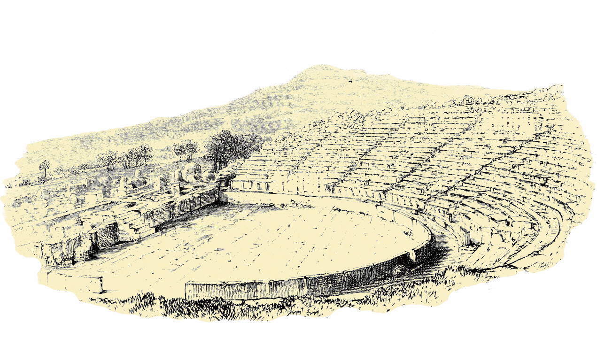

Il silenzio di Iole
nel teatro e nelle Trachinie

Il silenzio di Iole, secondo la definizione di Taplin (1972), è un silenzio notevole, un vero silenzio “eschileo”, vale a dire uno di quelli che crea aspettativa prima di una rivelazione o di una parola decisiva o che isolano il personaggio o che fanno comunicare il personaggio attraverso gesti, postura e presenza scenica. Lei non agisce, si limita a esistere e a soffrire, la sua presenza determina il destino degli altri personaggi, sia di Deianira, sia di Eracle, perché incarna il potere di Eros che investe l’eroe con una passione travolgente.
Il silenzio di Iole si spiega solo in apparenza con ragioni tecniche: Sofocle aveva introdotto un terzo attore e questa innovazione ampliava la possibilità del dramma e produceva un nuovo effetto drammatico. Con tre attori parlanti si potevano realizzare dialoghi più complicati e nelle Trachinie in scena ci sono già Deianira, Lica e il messaggero; quindi, Iole sarebbe stato un quarto personaggio e perciò non avrebbe avuto la possibilità di parlare. Tuttavia, non ci sono testimonianze su un quarto attore parlante; ne consegue l’impossibilità di un dialogo con più di tre personaggi per volta. All’occorrenza, comunque, l’azione dei tre attori veniva integrata da personaggi muti, o forse da personaggi che, se non completamente muti, potevano essere esclusi dal conteggio. Lo schema comune nei dialoghi della tragedia è che due oratori conversano tra loro mentre un altro attore rimane in silenzio; nelle Trachinie (vv. 308-320) Deianira cerca di conoscere Iole, ma la giovane resta in silenzio. Lo spettatore apprende il pianto di Iole solo grazie all’intervento di Lica, poiché le maschere tragiche impedivano di vedere le espressioni facciali; la giovane, pur senza voce o movimenti, si distingue dalle altre prigioniere. .
Questo silenzio crea una presenza enigmatica: alcuni elementi suggeriscono che Iole fosse almeno parzialmente consapevole della propria condizione e della perdita dei suoi cari, generando uno scarto tra ciò che il personaggio mostra e ciò che lo spettatore può intuire. Iole, dunque, era un personaggio muto e in quanto tale rappresentava un attore superfluo rispetto alla convenzionale “regola dei tre attori”. Ma la vera motivazione che si cela dietro al silenzio di Iole è che lei taccia per dolore e vergogna: come principessa di Ecalia, non è per nulla contenta di essere diventata la schiava e l’amante di Eracle. Il drammaturgo avrebbe trovato il modo di far parlare Iole; allo stesso modo se, per ragioni “tecniche”, Iole non poteva esprimersi, Deianira non avrebbe insistito così tanto nel farla parlare.
ΔΗ. Εἴπ’, ὦ τάλαιν’, ἀλλ’ ἡμὶν ἐκ σαυτῆς· ἐπεὶ 320
καὶ ξυμφορά τοι μὴ εἰδέναι σέ γ’ ἥτις εἶ.
ΛΙ. Οὔ τἄρα τῷ γε πρόσθεν οὐδὲν ἐξ ἴσου
χρόνῳ διοίσει γλῶσσαν, ἥτις οὐδαμὰ
προὔφηνεν οὔτε μείζον’ οὔτ’ ἐλάσσονα,
ἀλλ’ αἰὲν ὠδίνουσα συμφορᾶς βάρος 325
δακρυρροεῖ δύστηνος, ἐξ ὅτου πάτραν
διήνεμον λέλοιπεν. Ἡ δέ τοι τύχη
κακὴ μὲν αὐτῇ γ’, ἀλλὰ συγγνώμην ἔχει.
Deianira: Allora dimmelo tu stessa infelice. È cosa che rattrista, credimi, non sapere chi sei.
Lica: No, non scioglierà la sua lingua: sarebbe in contrasto con l’atteggiamento finora tenuto. Non ha proferito una sola parola, né lunga, né breve, ma sempre oppressa dal peso della sua sventura non fa che versare lacrime, misera, dal giorno in cui ha lasciato la sua patria ormai dispersa ai venti. Certo il destino è crudele con lei: ma le concede il diritto di essere perdonata.